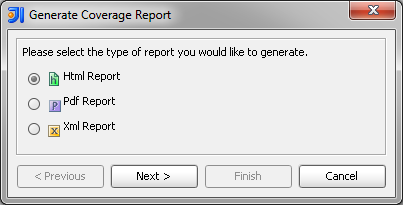
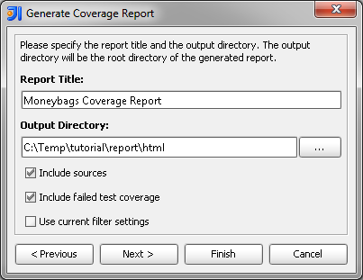
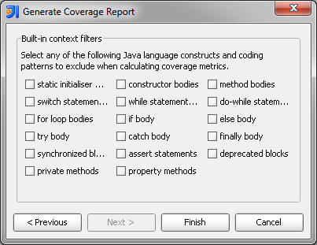
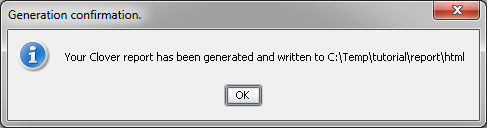
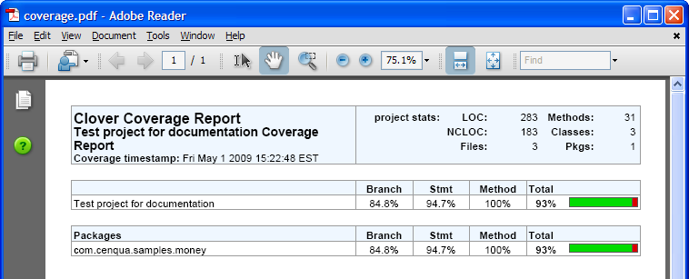

Introduction
The Clover for IDEA plugin allows you to generate HTML, PDF or XML reports for your project.
Generating a Report
To create a report, open the "Cloverage" window and click on the "Generate Clover Report" button. The 'Generate Coverage Report' dialog opens.
Select an Output Format
For your report, you can select an output format of HTML, PDF or XML. To select the desired output format, click the corresponding radio button in the 'Generate Coverage Report' dialog and click 'Next'.

Configure General Settings for the Report
Your report can make use of the following settings:
| Setting | Default | Description |
|---|---|---|
| Report Title | <project name> Coverage Report | Report title. |
| Output Directory | <project dir>\report\html | Directory where report will be written to. In case when report already exists in this location, appropriate warning will be displayed. |
| Include sources (only for HTML reports) | True | Whether to include source code in the HTML reports. Not including source will mean users can't see per-line coverage information but report generation will run faster. |
| Include line info (only for XML reports) | False | Whether line by line coverage information is added to the report. |
| Include failed test coverage (only for HTML reports) | True | Tests from failed tests are included by default but can be excluded if they wish to discount this as worthy of being reported. |
| Use current filter settings | False | If the user un-checks this they will be given the opportunity to set a custom context. |

Configure context filters
Filter configuration page is only shown if you choose not to accept default filter settings. This lets you select any of the predefined pre-defined filters.

Finalize the Report
Clicking 'Finish' will start the report generation process. Progress will be displayed on status bar.
Opening the Generated Report
When report generation is complete, a pop-up will display a location of generated report. You have to open this report manually.

Sample PDF Report

Next chapter: 7. Test Optimization for IDEA.